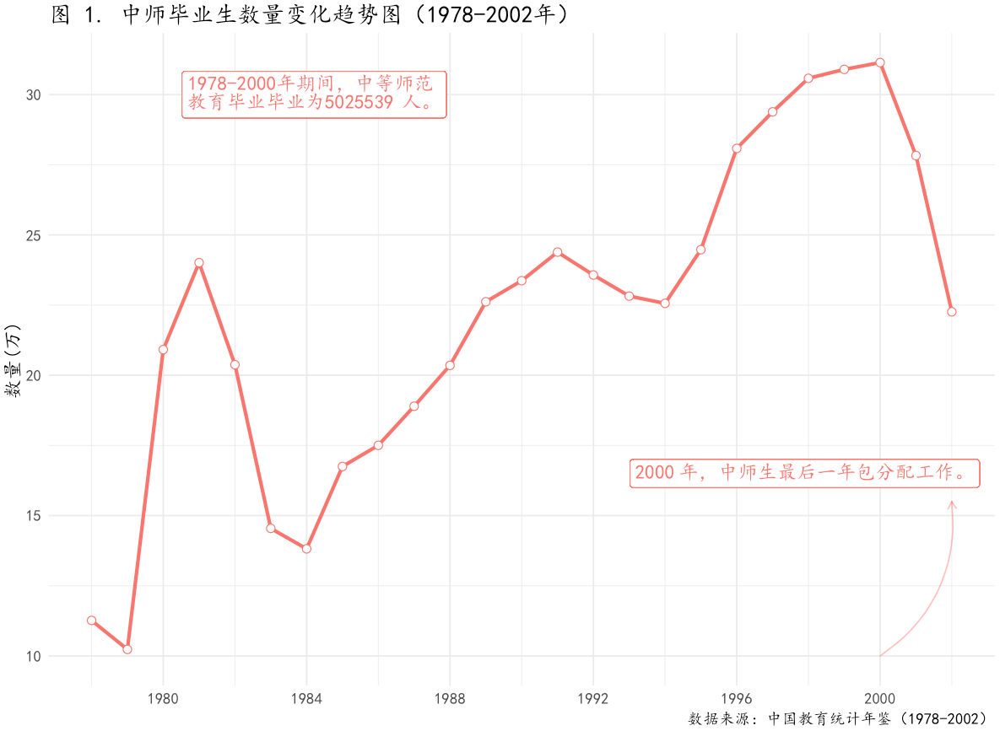

随想/评论/技术

县中塌陷的原因之一可能不是优秀教师去了大城市，而是优秀教师渐渐退休了，没有优秀的教师补充进来。如果国家不采取措施吸引优秀的人才进入教师队伍，这个问题会越来越严重.
昨日，教育部发布公告，就《教师法（修订草案）》公开征求意见。读完征求意见稿，对中小学教师有关的部分，整体而言，我是比较失望的，因为其没有有效回应中小学教师人事管理实践和司法实践的迫切需求。
中小学教师的”教龄津贴”是一个特别刺眼的存在，虽然是特定历史时期的制度残留，但如果使用得当的话，很可能成为改革中小学教师工资制度的一个重要抓手。
校企在技能人才供需上存在信息鸿沟。构建校企信息沟通的有效表征指标，建立技能供求信息的收集、共享机制，弥合校企信息鸿沟是促进产教整合、校企合作的奠基性工作，对促进职业教育发展具有重要意义。
《教师法》修订正在进行中。近些年，越来越多教师试图通过司法解决权益受损问题。司法是《教师法》的适用现场，探讨教师权益的司法案例将有助于发现和回应教师人事管理法制建设中的现实问题。因此，本号将推出一组中小学教师权益相关的案件分析文章，今天第一期是一个关于应聘中小学教师被取消面试资格的案例。
《教师法》修订系列案例分析第二期，一个关于聘用合同到期单位不续签的案例。2002年之后，中小学教师人事管理逐渐引入了聘用合同制度，随之而来的则是合同的期限制度，合同到期终止，双方权利义务归于消灭，教师职业安全保障则取决于传统约束。在普通劳动者和和公务员的职业安全保障制度建立之后，包括中小学教师在内的事业单位工作人员的职业安全保障是一块制度残缺。
中小学教师职称评审涉及行政权力和专家权力的自由裁量，包括学校管理层、评审委员会专家、以及负责召集专家的教育行政部门，还有负责最终审核的人社部门。任何一个主体不公正行使职权，都会影响职称评审的结果。且校长、评审专家和行政部门工作人员也比较容易形成利益共同体，不利于普通教师的权益保护。迫切需要将中小学教师职称评审纳入到行政诉讼的受案范围当中，接受司法监督。